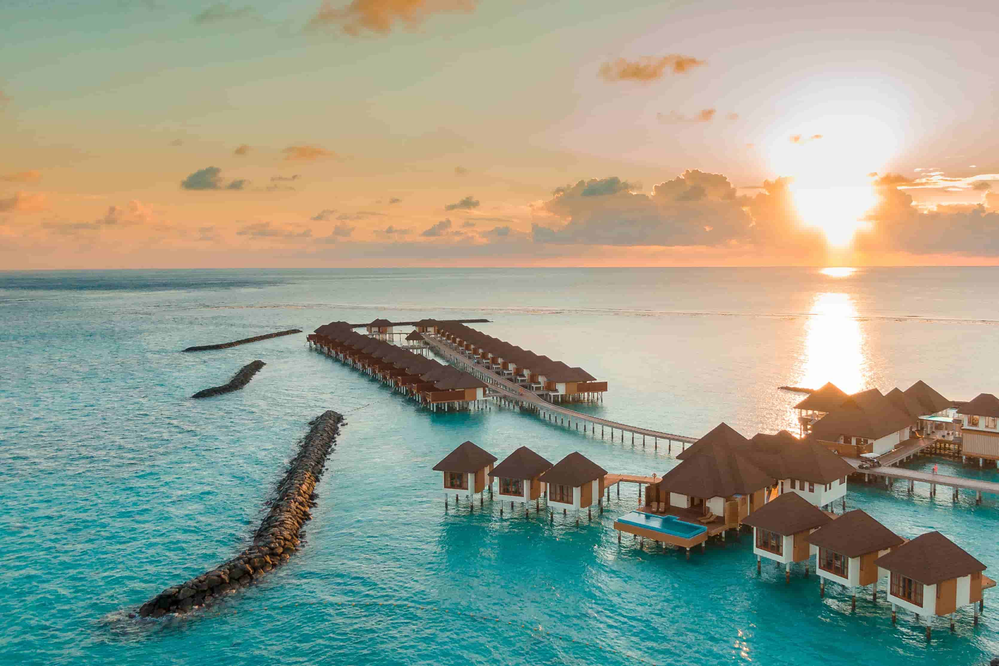
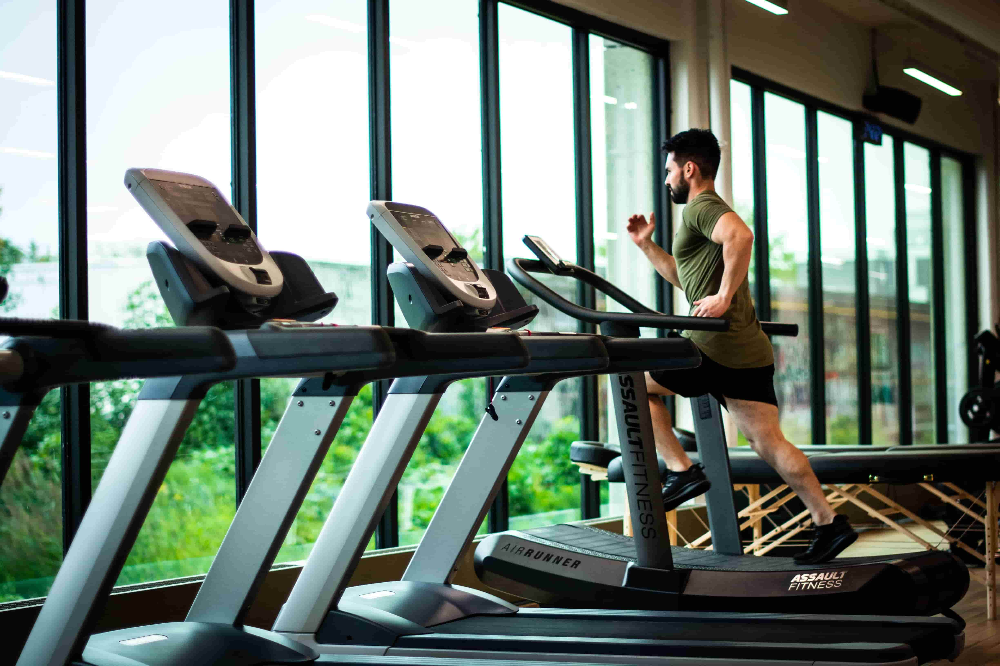
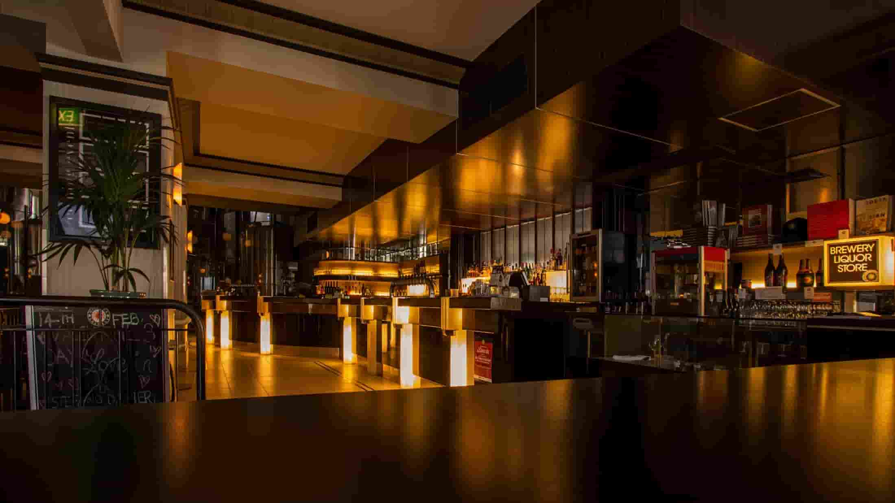
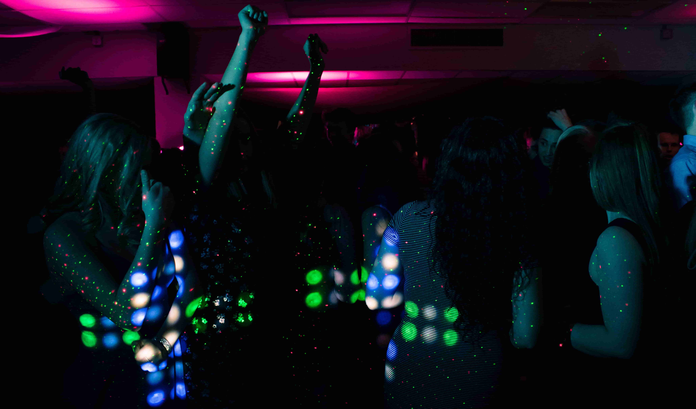
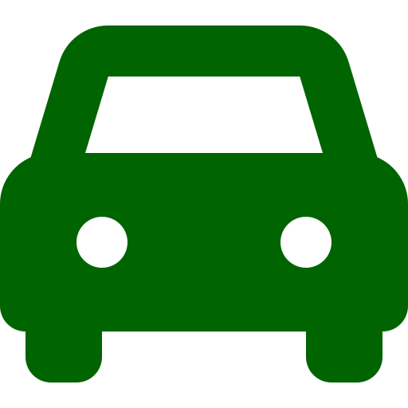
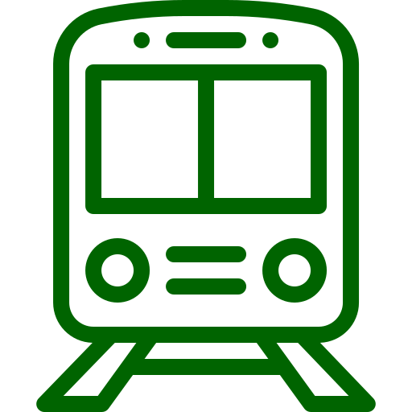

Парк-отель «БЕРЕНДЕЙ»
В 22 километрах от г. Тамбова (430 км на юг от г. Москвы), в живописном месте на высоком песчаном берегу, покрытом полуторавековым сосновым бором, расположен парк-отель «БЕРЕНДЕЙ».

Оборудованный пляж и лодочная пристань


Фитнесс-центр и детская игровая комната

Ресторан

Бар, караоке, танцпол и другие развлечения
Для посетителей из Москвы и Московской области
Существует 3 способа добраться до парк-отеля «БЕРЕНДЕЙ»:
-
автотранспортом — по трассе Москва-Волгоград "Каспий" М6, 450 км или около 5-6 часов езды на юго-восток от г. Москвы, до кольцевой около г. Тамбова. Далее по прилагаемой схеме проезда;
-
железнодорожным транспортом - фирменным поездом Москва - Тамбов № 031 отправляющимся с Павелецкого вокзала в 2210 и прибывающим в г. Тамбов в 720, или поездом № 651 отправляющимся с Павелецкого вокзала в 2320 и прибывающим в г. Тамбов 950. Далее на такси. А так же проходящими поездами Москва-Астрахань, Москва-Балаково, Москва-Саратов и т.д. Более точную информацию можно получить на сайте www.rzd.ru;
-
самолетом АН-24 или ЯК-40, время в пути 1 час 15 минут из Москвы (Внуково или Домодедово) до Тамбова. Далее на такси. До аэропорта Внуково или Домодедово на Аэроэкспрессе с Киевского или Павелецкого вокзалов через каждые полчаса, время в пути 30 минут, стоимость проезда 320 руб. Вылет из г. Москвы в 1945 . Обратно в г. Москву вылет в 720, кроме субботы и воскресенья. Расписание постоянно меняется, поэтому более точную информацию можно получить на сайтах www.vnukovo.ru или www.dme.ru